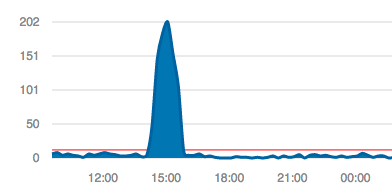
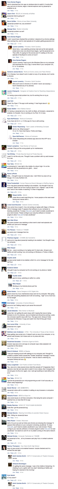
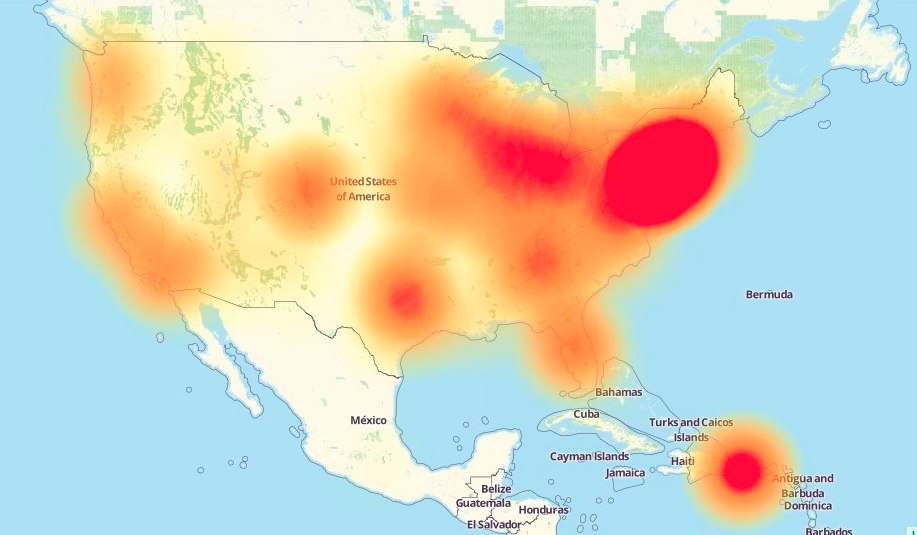
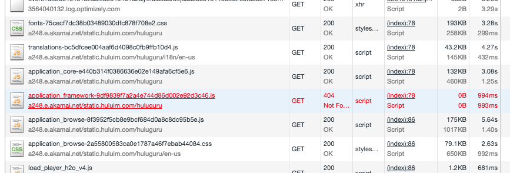

Last afternoon, we encountered a bit of down time on our site. Before anybody told us, we didn’t even know what’s going on.
We did a deployment for just dark launch of some feature, and it is supposed not to break anything or affect any User Experience. After that, we fixed a small bug and did another deployment. Then we did some sanity check and made it a successful deployment. After that, we continued working on other things.
We didn’t know anything before one colleague from US side HipChated us, that a lot of users reported that they can’t even open our site, and see some JavaScript error. The colleague also shot us a link.

WTF? Java(Script) error?

One thing occurred to me that, most time for our site, JavaScript error means missing asset. But we still cannot believe this is true.
From the down detector, we find that most problems are from East Coast. So it might be something wrong with one of our DCs.

So I connected to our VPN for this DC, and opened our site, and find that there is one JS 404, just like I guessed.

I quickly copied things so that it works again. The down time is over.
But I wonder why. Why can’t I find the asset?? We dig into that, only to find that the built outputs are different in different data centers. We did a diff and find that there is a value not the same in the huge JS file, which causing the JS manifest/md5 not the same. So I know the reason.
We did compilation on different servers with Nginx, and copy the built assets into the local folder to be directly served by Nginx. The output of the compilation contains 2 part: JS part and rails server part.
And during the compilation, there is a backend call encountered inconsistency issue in different data centers. And they get different values back which is built into the JS part. But we only use only one data center as the running rails server, they just trying to get the assets built in its manifest list which does not exist in other data centers.
From this incident, we know that:
- We are trying to do SPOT, b/c we have rails server part done with SPOT.
- We should have done better and have JS part done with SPOT.
Nowadays, more and more systems are distributed. Single Point of Truth becomes so important. If you haven’t done it well for your distributed systems, you might encounter unexpected disasters one day as we had..